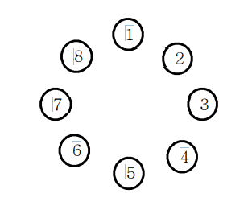

정보 왕국의 이웃 나라 외동딸 공주가 숲속의 괴물에게 잡혀갔습니다.
정보 왕국에는 왕자가 N명이 있는데 서로 공주를 구하러 가겠다고 합니다. 정보왕국의 왕은
다음과 같은 방법으로 공주를 구하러 갈 왕자를 결정하기로 했습니다.
왕은 왕자들을 나이 순으로 1번부터 N번까지 차례로 번호를 매긴다. 그리고 1번 왕자부터 N
번 왕자까지 순서대로 시계 방향으로 돌아가며 동그랗게 앉게 한다. 그리고 1번 왕자부터 시
계방향으로 돌아가며 1부터 시작하여 번호를 외치게 한다. 한 왕자가 K(특정숫자)를 외치면 그
왕자는 공주를 구하러 가는데서 제외되고 원 밖으로 나오게 된다. 그리고 다음 왕자부터 다시
1부터 시작하여 번호를 외친다.
이렇게 해서 마지막까지 남은 왕자가 공주를 구하러 갈 수 있다.

예를 들어 총 8명의 왕자가 있고, 3을 외친 왕자가 제외된다고 하자. 처음에는 3번 왕자가 3
을 외쳐 제외된다. 이어 6, 1, 5, 2, 8, 4번 왕자가 차례대로 제외되고 마지막까지 남게 된 7
번 왕자에게 공주를 구하러갑니다.
N과 K가 주어질 때 공주를 구하러 갈 왕자의 번호를 출력하는 프로그램을 작성하시오.
▣ 입력설명
첫 줄에 자연수 N(5<=N<=1,000)과 K(2<=K<=9)가 주어진다.
▣ 출력설명
첫 줄에 마지막 남은 왕자의 번호를 출력합니다.
▣ 입력예제 1
8 3
▣ 출력예제 1
7
Tip
인덱스를 다음것으로 간편하게 이동시키는 방법이 있다.
인덱스를 저장하는 대신, shift 해서 이동시키면 된다.
shift 연산자는 현재 가리키고 있는 값을 앞에서 부터 하나씩 빼는 것